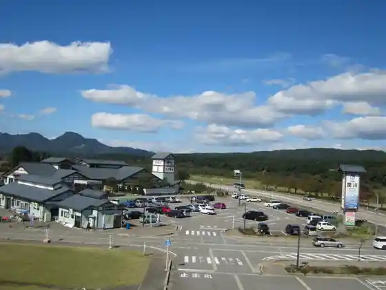
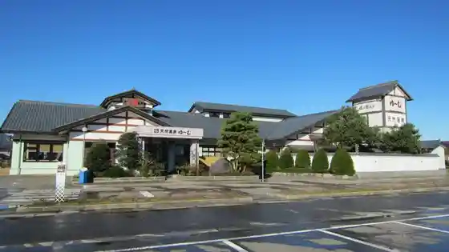
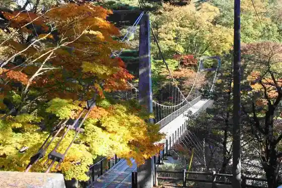
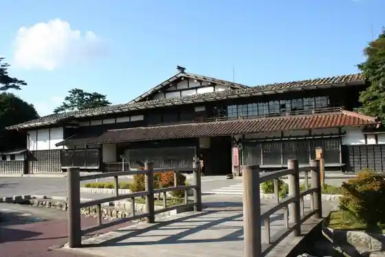

Roadside Station Sekikawa (Katsura no Kan)
Sekikawa, Niigata · 0254-64-0252 · Official / source link

Roadside Station Sekikawa (Katsura no Kan Onsen Yu Mu)
Sekikawa, Niigata · 0254-64-1726 · Official / source link

Arakawa Kyo Momiji Line Taka no Su Suspension Bridge
Sekikawa, Niigata · 0254-64-1478 · Official / source link

Kuni Shitei Juyo Bunkazai Watanabe Tei
Sekikawa, Niigata · 0254-64-1002 · Official / source link

Neko Chigura
Sekikawa, Niigata · 0254-64-3311 · Official / source link
Echigosekikawa Onsen Sato
Sekikawa, Niigata · Official / source link
Kosumosu Park
Sekikawa, Niigata · 0254-64-1478 · Official / source link
Oishi Otokyanpu Village
Sekikawa, Niigata · 0254-64-0252 · Official / source link
Kyu Yonezawa Kaido Echigo San Toge (Taka no Su Toge Enoki Toge Osato Toge)
Sekikawa, Niigata · 0254-64-1478 · Official / source link
Arakawa Kyo Budo Sono
Sekikawa, Niigata · 0254-64-2199 · Official / source link
Unmo Onsen (Echigosekikawa Onsen Sato)
Sekikawa, Niigata · 0254-64-1478 · Official / source link
Sato Ie House
Sekikawa, Niigata · 0254-64-1478 · Official / source link
Taka no Su Campground
Sekikawa, Niigata · 0254-64-0252 · Official / source link
Taka no Su Onsen (Echigosekikawa Onsen Sato)
Sekikawa, Niigata · 0254-64-1478 · Official / source link
Higashi Katsura En
Sekikawa, Niigata · 0254-64-0252 · Official / source link
Sekikawa Kankojoho Center Nya Mu
Sekikawa, Niigata · 0254-64-0252 · Official / source link
Higashi Katsura En Kafe
Sekikawa, Niigata · 0254-64-1349 · Official / source link
Oishi Damu Kohan Kenmin Kyuyochi
Sekikawa, Niigata · 0254-64-0252 · Official / source link
Okura Shrine
Sekikawa, Niigata · 0254-64-1490 · Official / source link
Yuzawa Kannon Park
Sekikawa, Niigata · 0254-64-1478 · Official / source link
Takase Onsen (Echigosekikawa Onsen Sato)
Sekikawa, Niigata · 0254-64-1478 · Official / source link
Yuzawa Onsen (Echigosekikawa Onsen Sato)
Sekikawa, Niigata · 0254-64-1478 · Official / source link
Maruyama Bridge Maruyama Park
Sekikawa, Niigata · 0254-64-1478 · Official / source link
Takase no Sakura Namiki (Migoro : Reinen 4 Tsukishojun)
Sekikawa, Niigata · 0254-64-1478 · Official / source link
Taki Shrine no Shimizu (Takijinja no Shimizu)
Sekikawa, Niigata · 0254-64-1478 · Official / source link
Hikari Usagi Yama (Nakamaru Tozanguchi)
Sekikawa, Niigata · 0254-64-1478 · Official / source link
Sekikawafureaido Mu
Sekikawa, Niigata · 0254-64-0252 · Official / source link
23 Nen Higashimata Rindo Tsukokinshi Tsue Sa Gaku (Oishi Tozanguchi)
Sekikawa, Niigata · 0254-64-1478 · Official / source link
Higashi Katsura En Ofisu
Sekikawa, Niigata · 0254-64-0252 · Official / source link
Boku Saka Yama (Boku Saka Yama Tozanguchi)
Sekikawa, Niigata · 0254-64-1478 · Official / source link
Furusato Sekikawa O Zen
Sekikawa, Niigata · Official / source link
Ritsu Tori Boshi (Oishi Tozanguchi)
Sekikawa, Niigata · 0254-64-1478 · Official / source link
Sekikawa Rekishi Tomichi no Kan
Sekikawa, Niigata · 0254-64-1288 · Official / source link
Taka no Su Campground
Sekikawa, Niigata · 0254-64-0252 · Official / source link
Arakawa
Sekikawa, Niigata · 0254-64-1478 · Official / source link